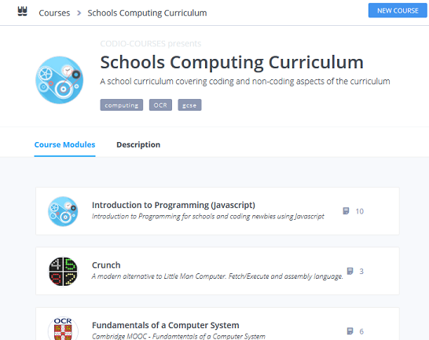
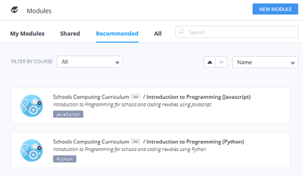
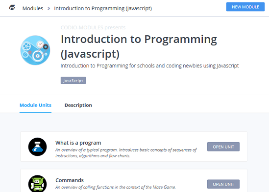

Codio offers a 3 level hierarchy for organising and publishing course materials.
- A Course is the top level and consists of a collection of Modules. 
- A Module will typically incorporate all the course materials to cover a logical area of a curriculum or coursework. It in turn consists of a collection of assignments. 
- An Assignment is the lowest level item of coursework. It will typically contain enough material to cover a particular topic or area of a curriculum or coursework. An assignment is taken directly from a Codio project. 
Take a look at the Resources area and open a Course to see its associated Modules and, within each Module, the assignments.
Authoring your own content
Please read the Authoring Strategies section first. Ideally, you should also have read the full Authoring section and created your first project with Codio content, ready to be turned into a assignment.
Direct Access vs. courses
Having set your permissions, you should be aware of the two main ways others can then access the content.
- A student can access the Courses/Modules from the dashboard and press the Start assignment button having selected a Module.
- A teacher can create a course and then assign a Module to that course. Students can then access the course from the Dashboard and access assigned Modules and their assignments from there.
Generally speaking, course based scenarios should use the course feature to save the student from having to search for the Course/Module.
Modules
A module is a collection of assignments (the actual teaching content). Courses have at least one module and most have several modules.
If you select a modules, you will be shown all the assignments that make up that module. You can add new assignments to a module from this screen.
Assignments
An assignment is the actual teaching content. You can edit the descriptions as well as refresh the assignment from its original source project.
How assignments are published and updated
When an author publishes an assignment, a copy of the source project is made and stored separately in the Codio platform. Any subsequent changes to the source project will not be seen, so it is safe to make changes without concern for how these changes will affect students who are already working on an assignment.
When you have finished updating the source project and are ready to update the assignment, you should find your assignment in its parent module, press the edit assignments slider and then press refresh Source.
It could happen that a student starts on a assignment and afterwards the assignment's author updates the content. You should be aware that the student will not see any changes
- while the author is updating the source project from which the assignment was taken
- if the assignment is subsequently updated from its source project. In order for the student to see the modified assignment, the student's assignment project should first be deleted and then the assignment restarted. The drawback to this is that any assessments taken and the associated data is lost.